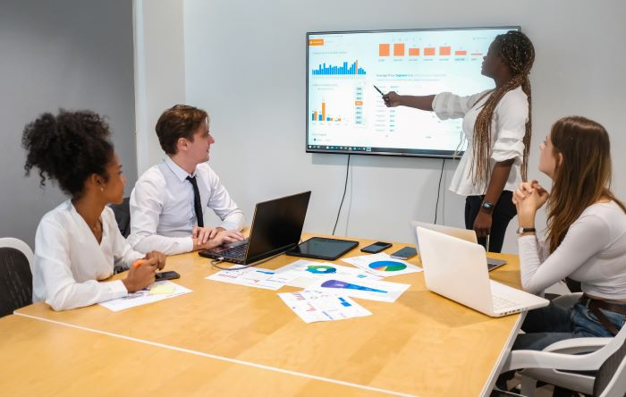

Geolog Consultoria: soluções logísticas que geram resultados
Estruturamos projetos de consultoria, treinamentos, laudos e perícias em logística para empresas que precisam de performance operacional, segurança jurídica e tomada de decisão baseada em dados.
Painel de Performance Logística
Visão integrada de operações
Sobre a Geolog
Consultoria em logística com base técnica, geográfica e jurídica
A Geolog Consultoria nasce na interseção entre logística empresarial, geoprocessamento e perícia judicial. Unimos a visão estratégica da cadeia de suprimentos com a profundidade analítica de quem atua diariamente em processos judiciais complexos.
- ◆ Atuação técnica com foco em resultados mensuráveis e indicadores claros de performance.
- ◆ Domínio de QGIS, georreferenciamento e análise espacial aplicados à logística urbana e rodoviária.
- ◆ Experiência prática em operações de transporte, estoques, almoxarifados e frotas.
- ◆ Capacidade de tradução técnica para o jurídico, facilitando a interlocução com o Poder Judiciário.
+ 8 anos de atuação em logística e gestão de operações.
+20 projetos entre consultorias, laudos e perícias.
+3 pós-graduações em logística, geoprocessamento e ensino.
Foco em tomada de decisão
Como trabalhamos
Cada projeto começa com um diagnóstico estruturado, combinando entrevistas, análise documental, dados operacionais e mapeamento de processos.
A partir daí, construímos cenários com simulações de rotas, custos e níveis de serviço, utilizando ferramentas de geoprocessamento e modelos quantitativos.
O resultado é um plano claro, com prioridades, estimativa de ganhos e riscos mapeados, que pode ser executado pela própria empresa ou com acompanhamento da Geolog.
Portfólio de serviços
Consultoria, Treinamentos, Laudos e Perícias em logística
Uma oferta integrada de serviços para empresas que precisam alinhar estratégia, operação e segurança jurídica na logística, da doca ao cliente final.

Treinamentos/Capacitação

Laudo Técnico Logístico
Perícias em Logística
Prova Social
O que nossos clientes dizem
Depoimentos de empresas e profissionais que confiam na Geolog para resolver desafios logísticos complexos.
Por que escolher a Geolog
Uma visão que conecta operação, território e legislação
A Geolog combina a experiência de chão de fábrica e estrada com a visão analítica de quem domina geotecnologias e o ambiente jurídico. Isso permite entregar recomendações executáveis, defensáveis e sustentáveis.
-
Foco em resultado, não em relatório bonitoTodo projeto é desenhado para impactar indicadores concretos: custo por tonelada, lead time, nível de serviço, ocupação de frota e giro de estoques.
-
Uso intensivo de dados e geoprocessamentoQGIS, georreferenciamento e análise espacial são parte do dia a dia, permitindo modelar cenários, simular rotas e visualizar gargalos.
-
Linguagem técnica traduzida para o negócioTransformamos conceitos complexos em narrativas claras para diretoria, áreas de negócio e escritórios de advocacia.
-
Compromisso com ética e confiabilidadeAtuação alinhada às normas do TJ de vários estados, CRA e códigos de ética profissional, com independência e responsabilidade técnica.
Badges & Credenciais
Experiência e Credibilidade
As credenciais da Geolog garantem que cada projeto seja conduzido com rigor técnico e responsabilidade.
Cadastro Nacional de Administradores Judiciais (CNAJ)
Perito Judicial em Logística
Registro no CRA-SC
MBA em Logística & Gestão Industrial
Especialização em Geoprocessamento e Ensino
Atuação em gestão de estoques e almoxarifados
Experiência prática em operações, inventários, políticas de reposição e controle de perdas.
Gestão de frotas e operações de transporte
Atuação com foco em manutenção, roteirização, custos e conformidade com normas da ANTT.
Perícias e laudos em logística
Emissão de pareceres técnicos e laudos em disputas envolvendo contratos de logística e transporte.
Profissionais
Equipe técnica à frente da Geolog
A Geolog é liderada por profissional com formação sólida em Logística, Geografia e Docência, além de experiência em operações industriais, transporte e perícias judiciais.
Fundador • Perito em Logística • Consultor
Luiz Andrade
Rede de Especialistas
Contadores • Engenheiros • Advogados Parceiros
Atuamos com uma rede de profissionais selecionados para compor times multidisciplinares em projetos que exigem profundidade técnica, jurídica e financeira.
-
Perícias e disputas judiciais
Envolvendo transporte, armazenagem, custos logísticos e nível de serviço. -
Auditorias e revisões contratuais
Análises de contratos de frete, SLA, tabelas de custos e indicadores. -
Suporte técnico a escritórios de advocacia
Pareceres, notas técnicas e análises logísticas para teses jurídicas. -
Times sob medida
Formação de equipes específicas para operações logísticas complexas.
Os especialistas são indicados caso a caso, conforme o contexto da demanda, o risco envolvido e a complexidade da operação.
Perguntas frequentes
Dúvidas comuns sobre a atuação da Geolog
A seguir, algumas respostas objetivas para as perguntas mais recorrentes de empresas, escritórios de advocacia e gestores de logística que nos procuram.
A Geolog atende empresas fora de Santa Catarina ou do Brasil?
Sim. A Geolog foi pensada para uma atuação de alcance nacional e internacional. Parte relevante dos trabalhos pode ser conduzida de forma remota (reuniões, análise de dados e documentos), com visitas presenciais programadas quando necessário.
Qual é o perfil de empresa ideal para contratar a Geolog?
Atendemos especialmente indústrias, distribuidoras, operadores logísticos, transportadoras e escritórios de advocacia envolvidos com temas logísticos. O ponto comum é a necessidade de decidir com base em dados, rever processos e buscar segurança jurídica.
Como funciona um projeto de consultoria em logística?
O processo costuma seguir quatro etapas: (1) diagnóstico e coleta de dados; (2) modelagem e simulação de cenários; (3) desenho de soluções (processos, rotas, políticas, KPIs); e (4) plano de implementação com priorização, prazos e estimativa de ganhos.
Em que situações a perícia em logística é recomendada?
A perícia é indicada em disputas contratuais, questionamentos sobre custos de frete, nível de serviço, perdas e avarias, bem como em ações judiciais que envolvem operações de transporte e armazenagem.
A Geolog oferece treinamentos personalizados para a equipe?
Sim. Estruturamos programas de capacitação sob medida, alinhados ao nível da equipe e aos desafios da operação, incluindo temas como fundamentos de logística, geoprocessamento aplicado e boas práticas em transporte.
Contato & Orçamento
Vamos conversar sobre os desafios logísticos da sua operação?
Preencha o formulário ou escolha um dos canais abaixo. A Geolog responde com objetividade, sempre buscando entender o contexto antes de sugerir qualquer solução.
Contato • Projetos • Perícias
Fale com a Geolog
Respondemos em até 24h úteis
Use este formulário para dúvidas gerais, convites, entrevistas ou para solicitar um orçamento de consultoria, treinamentos, laudos e perícias em logística.
Canais diretos
Pomerode • Santa Catarina • Brasil
Atuação com foco em logística de transportes e cadeias de suprimentos.
Atuação com foco em logística de transportes e cadeias de suprimentos.
WhatsApp Business:
Fale com a Geolog
Privacidade & uso dos dados
Ao enviar este formulário, você autoriza a Geolog Consultoria a utilizar os dados informados exclusivamente para retorno do contato e tratativas relacionadas. Não compartilhamos suas informações com terceiros para fins de marketing.
Redes profissionais
A Geolog mantém presença ativa em redes profissionais para compartilhar conteúdos, artigos, cases e oportunidades de colaboração.